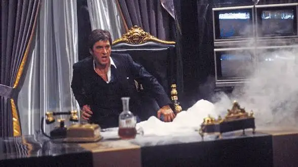

Scarface (1983) — CERTIFIED MGC MS-61

🏛️ MGC SUPREME COURT OF CONSENSUS
- ASSET TITLE: Scarface (1983)
- OFFICIAL REGISTRY GRADE: Certified MGC MS-61 (Typical Uncirculated)
- HIGH BENCH JURISDICTION: Supreme Court Vault Active Docket
- CASE FILE: #009
- PRESIDING PANEL: Judge Sally, Chief Justice & Chief Grader MGC
📜 THE INITIAL INQUEST BENCH ASSESSMENT (3-FLAW DEFECT LOG)
- Baseline Bench Assessment: Room Allocation ➔ MS-60 Typical Uncirculated. The film enters the uncirculated register based on its historical footprint, though cult status does not grant a premium grade.
- 1. The Bloated Mid-Act Circulation Fatigue: The 170-minute runtime suffers from narrative drag and repetitive domestic loops during the second act.
- 2. The Theatrical Performance Bleed: Al Pacino’s portrayal features an exaggerated accent and melodramatic choices that affect realism.
- 3. The Dated Optical Composites & Synth Fade: Vintage audio bleeding and optical softness limit visual depth despite a nostalgic synth score.
⚖ THE APPELLATE REVIEW & REVERSAL ARGUMENTS
The Chief Justice stepped directly up to the high-bench console, throwing down a definitive executive ruling on the 3-Flaw Defect Log and ordering a 1-point boost to the final grade:
- Motion 1: Sustained.
- Motion 2: Sustained. The Court does absolutely love the exaggerated accent; it is a legendary performance that has ended up being mirrored in multiple films throughout the years. However, because these melodramatic choices directly affect the raw realism of the film’s crime alloy, we will formally sustain the defect.
- Motion 3: Sustained. Good job Supreme Judge Sally. The Chief Grader MGC has no objections.
🏆 🔍 THE FINAL DECREE & CERTIFIED JUDGMENT
- The Final Executive Verdict: While all three initial planchet flaws are sustained on the record, the immense cultural legacy and Tony Montana’s iconic, world-renowned accent earn the asset a 1-point premium adjustment. The Supreme Court officially upgrades and strikes this film at a final, certified MGC MS-61 (Choice Mint State Specimen) rating. Case closed! ⚖️🏆

• © 2026 MOVIE GRADING CONSENSUS. All Sovereign Rights Reserved.